Prospectus: Looking beyond typical correlates of influenza immunity.
Kelsey Florek Prospectus 01 May 2017
Slides available at:
www.k-florek.net/talks
why now and the plan ahead
US percentage of all deaths due to pneumonia and influenza each week
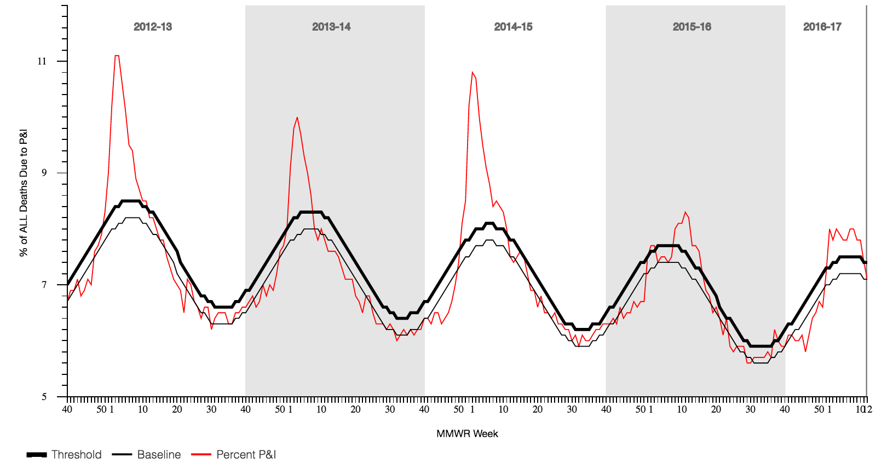influenza is a leading cause of death in the US (2014)
| All causes of death | 2,626,418 | % | |
| 1 | Diseases of the heart | 614,348 | 23.4 |
| 2 | Malignant neoplasms | 591,700 | 22.5 |
| 3 | Chronic lower respiratory diseases | 147,101 | 5.6 |
| 4 | Accidents (unintentional injuries) | 135,928 | 5.2 |
| 5 | Cerebrovascular diseases | 133,103 | 5.1 |
| 6 | Alzheimer's disease | 93,541 | 3.6 |
| 7 | Diabetes mellitus | 76,488 | 2.9 |
| 8 | Influenza and pneumonia | 55,227 | 2.1 |
| 9 | Nephritis, nephrotic syndrome | 48,146 | 1.8 |
| 10 | Intentional self-harm (suicide) | 42,826 | 1.6 |
vaccine effectiveness varies each season
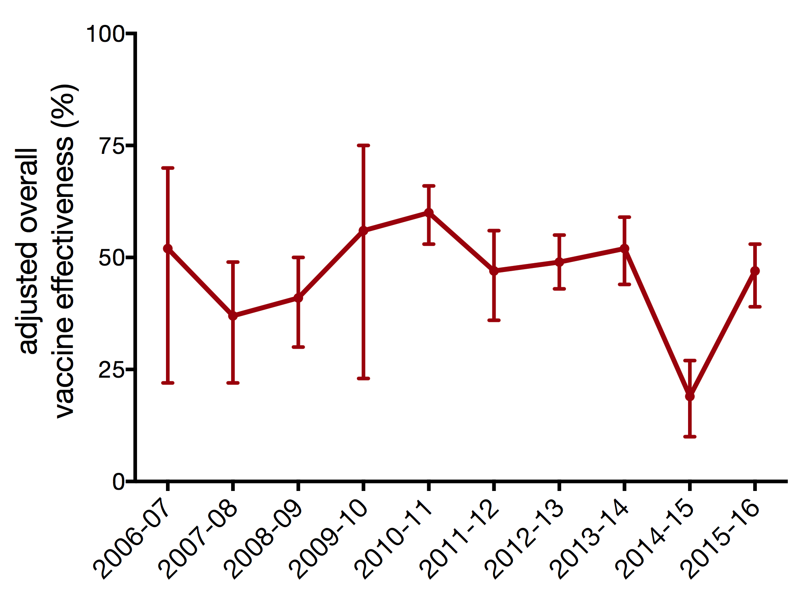seasonal vaccine production cycle

global surveillance of influenza viruses
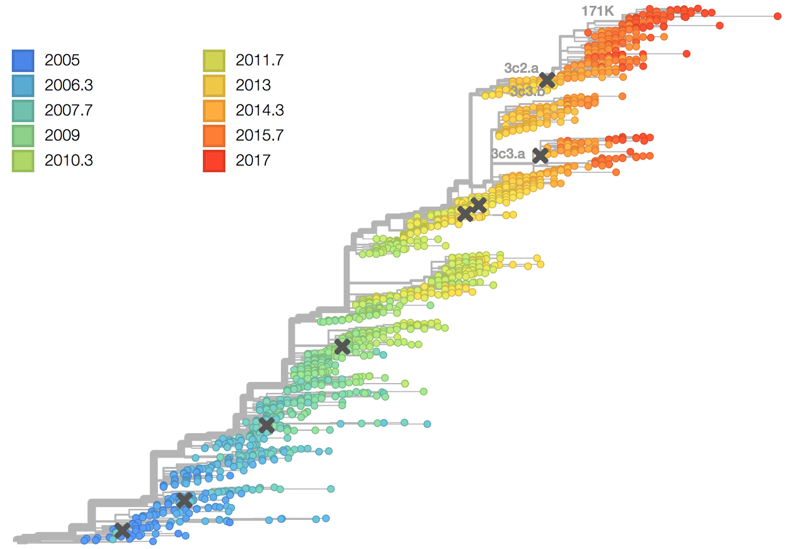generation of ferret anti-sera
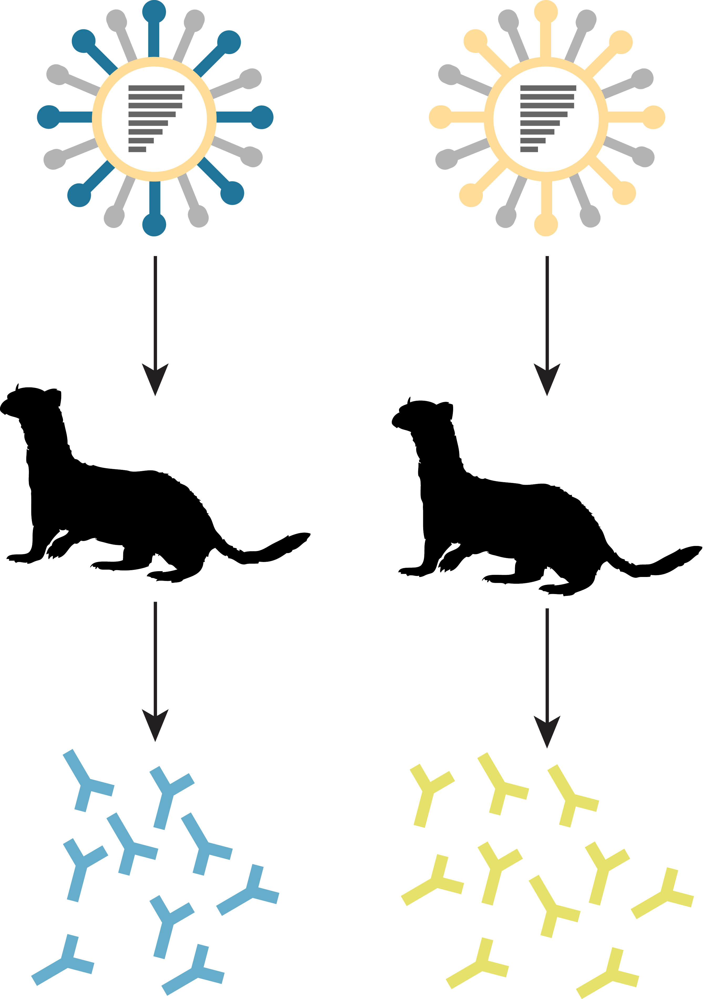hemagglutination inhibition
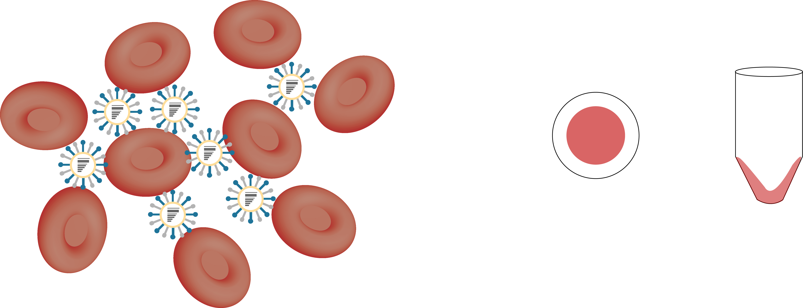hemagglutination inhibition
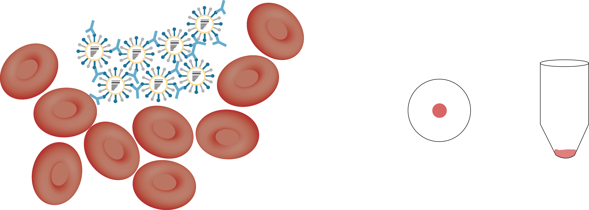hemagglutination inhibition
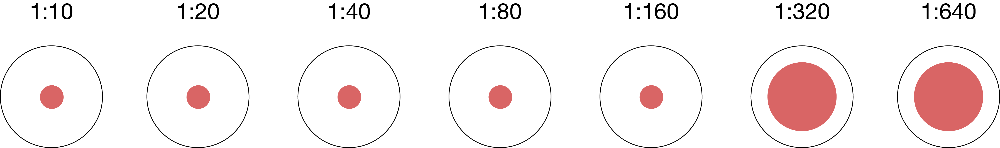influenza vaccination strains generated through reassortment

influenza vaccine selection is deeply flawed
- vaccine only uses HA and NA from target strain
- antigenic relatedness is determined using ferrets
- potential protection evaluated using a method that indirectly determines neutralization
- vaccine viruses manufactured in eggs
what other correlates of immunity could be used to improve vaccine effectiveness
outline of chapters
- heterosubtypic MVA vaccine and broadly reactive ADCC antibodies
- a mosaic antigen to elicit ADCC antibodies
- effects of seasonal influenza vaccination modality on ADCC antibodies
- capacity of a forward antigenic vaccine to generate broad antibody responses
part 1 - investigating pre-clinical vaccines
antibody dependent cell-mediated cytotoxcity (ADCC)

hypothesis: combination of NP and/or H5 in the MVA vector will elicit protective, cross-reactive T cell responses
heterosubtypic MVA vaccine and broadly reactive ADCC antibodies
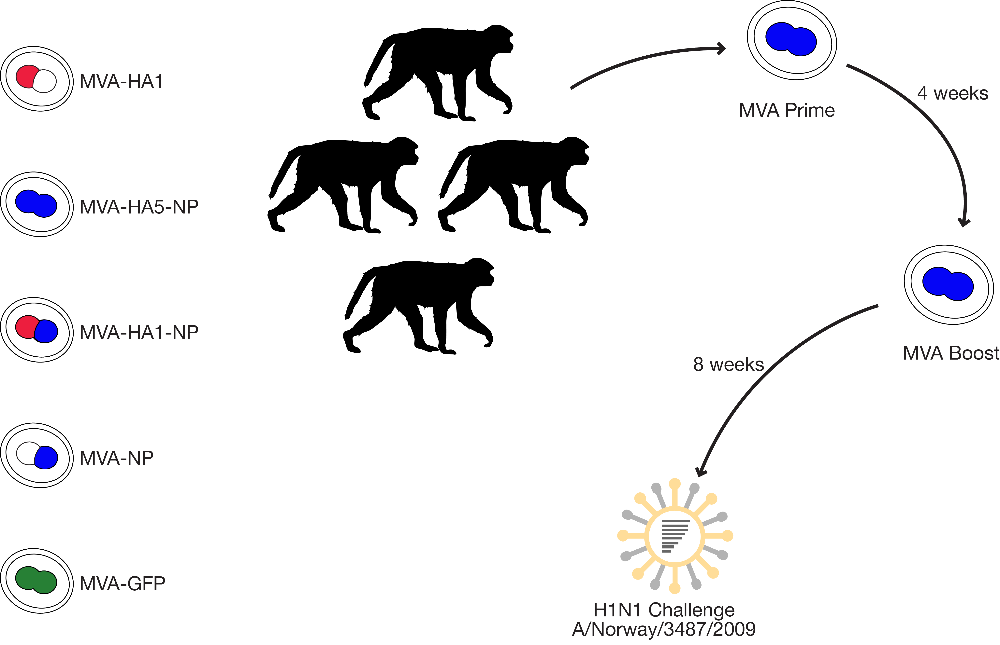summary
- MVA vaccines stimulated strong neutralizing antibodies that afforded protection against a homologous challenge strain
- vaccination with MVA-HA5-NP elicited binding but non-neutralizing antibodies against the heterologous H1N1 challenge strain
- these binding but non-neutralizing antibodies were able to activate and trigger degranulation in natural killer cells, indicating ADCC could be an important measure of protection
status of work:
published in The Journal of Virologyhypothesis: a mosaic H5 delivered via an MVA vector will elicit broadly protective ADCC antibodies
a mosaic antigen to elicit ADCC antibodies
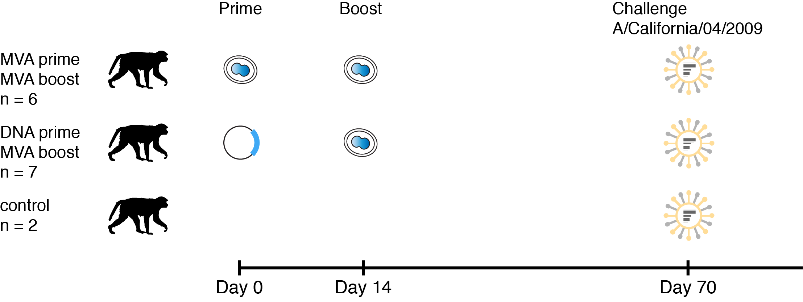summary
- mosaic MVA elicited binding and non-neutralizing antibodies capable of stimulating ADCC
- viral loads appear correlated with ADCC antibody titer (more evidence is needed)
- DNA or MVA prime had no noticeable effect
status of work:
addressing reviewer comments for resubmission to PLOS Onepart 2 - investigating FDA approved vaccines
hypothesis: vaccination with the inactivated influenza vaccine will stimulate ADCC antibodies
effects of seasonal influenza vaccination modality on ADCC antibodies
- 130 subjects
- ages 5 - 17
- serum collection
- day of vaccination
- 28 days post-vaccination
- examined ADCC responses against:
- A/Texas/50/2012
- A/Switzerland/9715293/2013
summary
- ADCC antibodies were present at baseline before exposure with A/Switzerland/9715293/2013
- vaccination with LAIV followed by IIV during the next season had the greatest effect on ADCC antibodies
status of work:
manuscript in preparation for submission to PLOS Onehypothesis: vaccination with the A/Switzerland/9715293/2013 strain will boost antibody responses to historical strains
antigenic cartography

antibody landscape
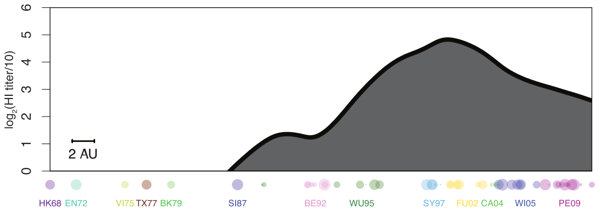antibody landscape over time
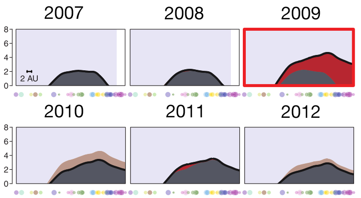vaccines boost responses against previously circulating strains
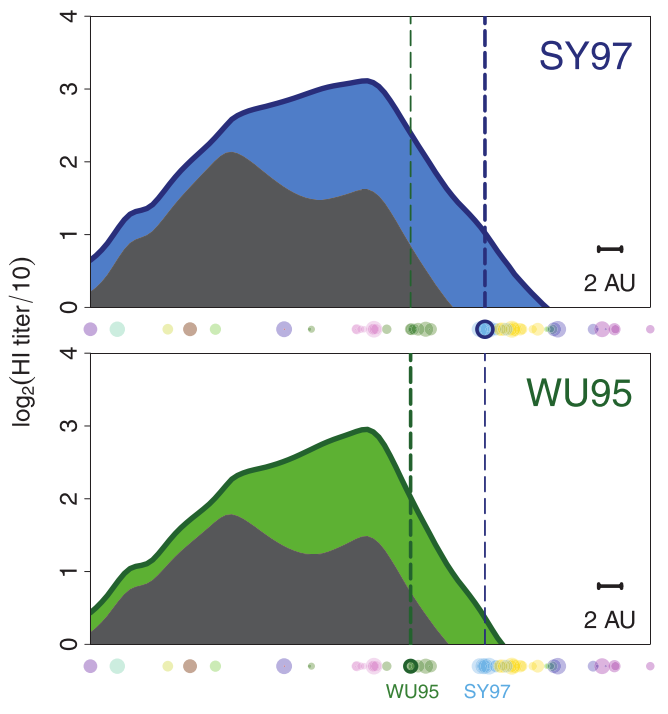using a unique situation to further investigate influenza back-boost
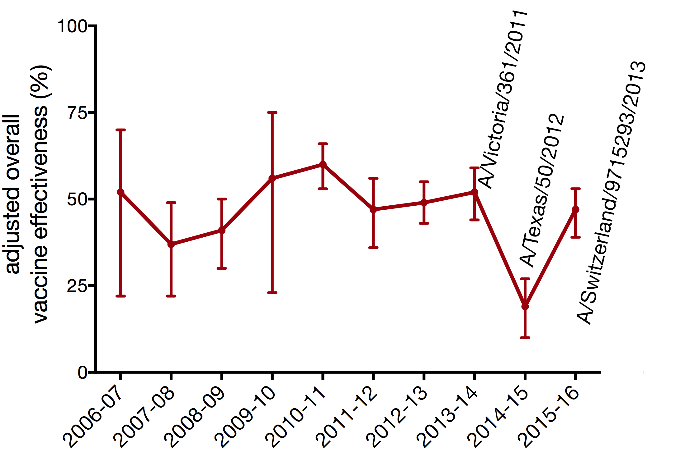antigenic distance from A/Victoria/361/2011
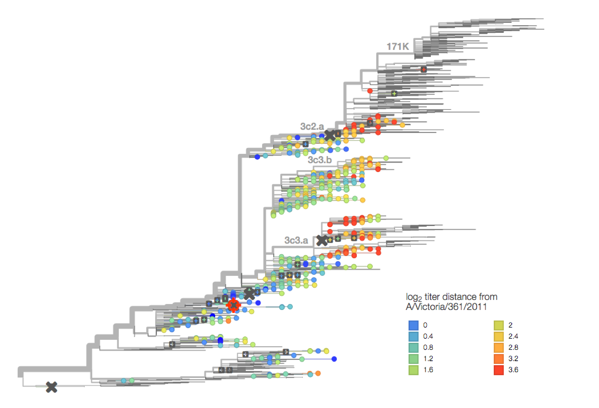capacity of a forward antigenic vaccine to generate broad antibody responses
- cohort study
- children aged 5-17 years
- subjects recruited on previous exposure
- 2014-15 IIV and uninfected n ~ 80
- 2014-15 flu A infected n ~ 20
- 2010-15 unvaccinated and uninfected n ~ 80
- 2014-15 vax: A/Texas/50/2012
- 2014-15 circ: A/Switzerland/9715293/2013
capacity of a forward antigenic vaccine to generate broad antibody responses
- tested 4 viruses
- A/Switzerland/9715293/2013
- A/Texas/50/2012
- A/Victoria/361/2011
- A/Wuhan/359/1995
- 2014-15 vaccination status
- unvaccinated: 34 (27%)
- vaccinated IIV: 77 (62%)
- vaccinated LAIV: 13 (11%)
- PCR confirmed influenza
- 2012-13: 10 (8%) A/Texas/50/2012-like
- 2014-15: 22 (18%) A/Switzerland/9715293/2013
using regression to model and predict qualitative and quantitative variables
- examines the relationship between the response (dependent) variable and predictor (independent) variables
- linear regression: quantitative response
- logistic regression: qualitative response
- predict responses while adjusting for confounding factors
how multiple regression works
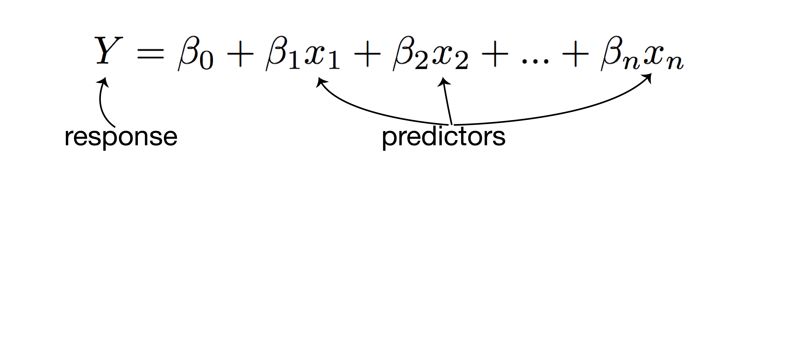how multiple regression works
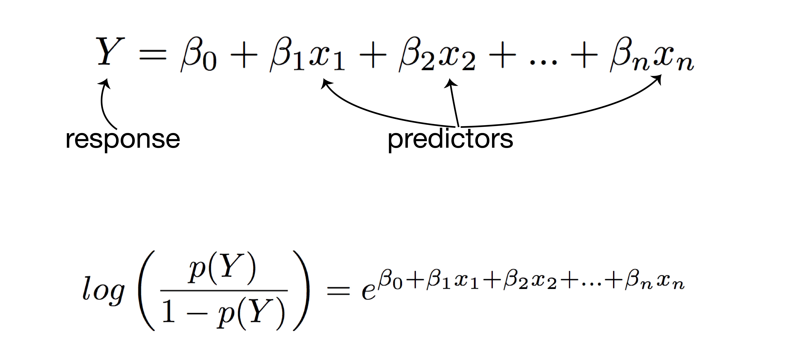linear regression analysis
- response: post-vaccination HI titer
- predictors:
- mean fold increase against A/Switzerland/9715293/2013
- baseline HI titer
- age
- high-risk condition
- vaccination status
- PCR confirmed infection status
logistic regression analysis
- response: post-vaccination seroprotection
- predictors:
- mean fold increase against A/Switzerland/9715293/2013
- baseline HI titer
- age
- high-risk condition
- vaccination status
- PCR confirmed infection status
vaccination increases the number of seroprotected subjects against the previous season strain
- A/Texas/50/2012 HI titer ≥ 1:40
- 29 subjects had baseline HI titer < 1:40
- 15 (52%) of those subjects had a post-vaccination HI titer ≥ 1:40
- A/Texas/50/2012 HI titer ≥ 1:110
- 114 subjects had baseline HI titer < 1:110
- 12 (11%) of those subjects had a post-vaccination HI titer ≥ 1:110
vaccination increases the number of seroprotected subjects against the previous season strain
- (A/Texas/50/2012 HI titer ≥ 1:40) 2-fold increase in HI titer against A/Switzerland/9715293/2013
- 5.9 times higher odds of seroprotection
- 95% CI 2.0 - 44.1
- P = 0.01
- (A/Texas/50/2012 HI titer ≥ 1:110) 2-fold increase in HI titer against A/Switzerland/9715293/2013
- 2.1 times higher odds of seroprotection
- 95% CI 1.4 - 3.4
- P = 0.0008
summary
- seasonal influenza vaccination provides a small but real boost to antibodies against historical antigens
- few participants were boosted to an HI titer ≥ 1:110 against A/Texas/50/2012 suggesting the historical boost may not be clinically significant for children
status of work:
at CDC for submission clearance to The Journal of Infectious Diseasesdrawbacks of influenza vaccines
- current vaccines are limited in breadth
- low vaccine effectiveness
- repeated annual vaccination
implications
- ADCC has potential for stimulating broadly protective responses
- seasonal vs pandemic vaccines and approaches to vaccination
- effects of repeated exposure on ADCC responses
- value of the back-boost response
- expansion of strain specific B cells vs cross-reactive antibodies
- selecting forward antigenic strains
- antigen trapping
acknowledgements
- Friedrich Lab
- James Mutschler
- Luiza Campos
- Kat Braun
- Louise Moncla
- Marshfield Clinic Research Foundation
- Edward Belongia
- Huong McLean
- Jennifer King
- Centers for Disease Control and Prevention
- Brendan Flannery
funding provided by:
SciMed Graduate Research Scholars
Molecular Biosciences Training Grant